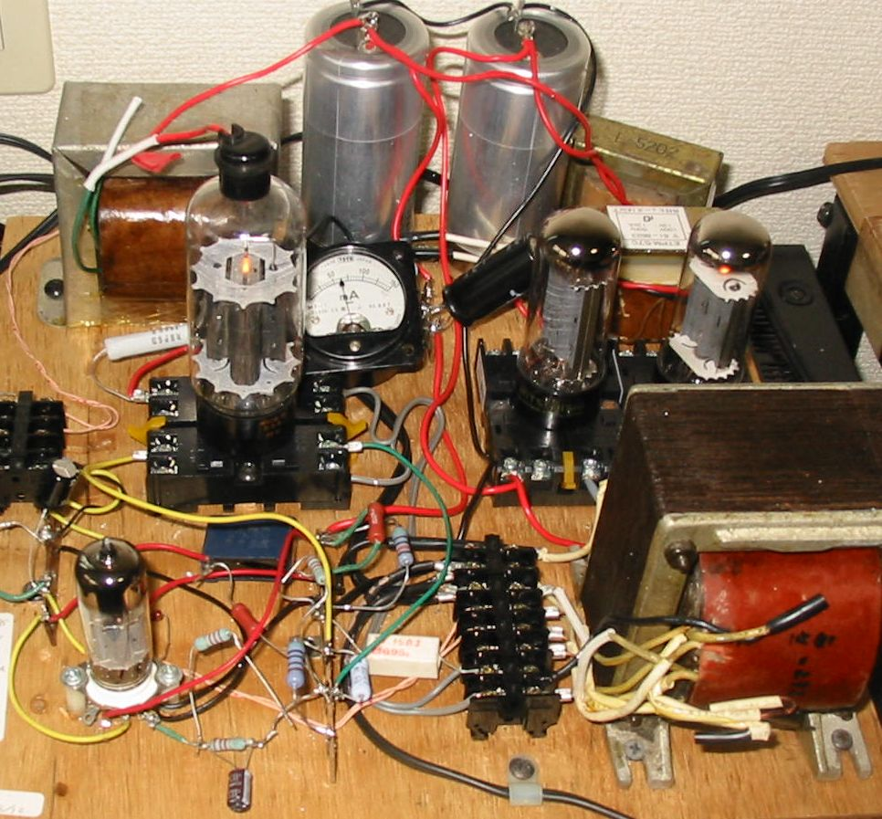
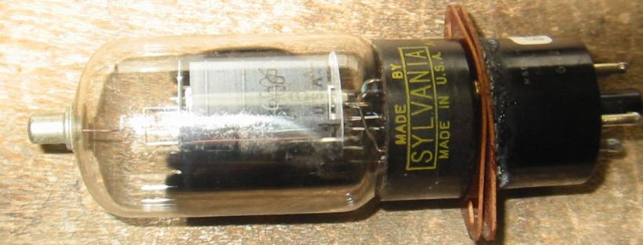
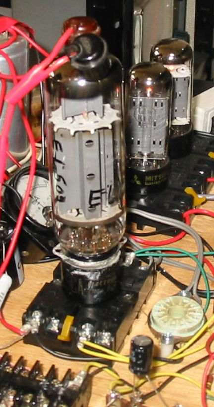
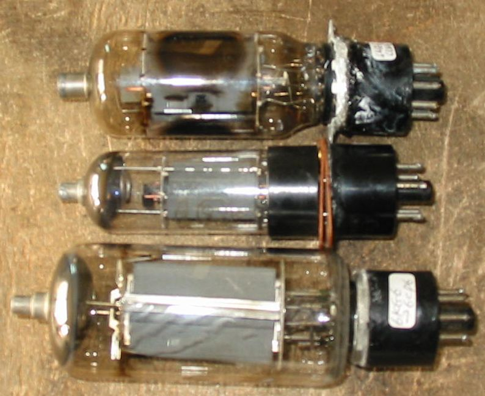
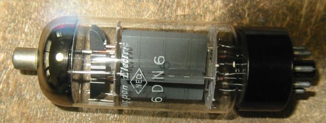

6CD6を使ったアンプの試作
6CD6という球は日本国内では使われていなかったようですが、アメリカでは白黒の時代から大型TV用に
大量に使用されていたようです。日本ではNECが輸出用に生産していたと思います。
アメリカでは現在も在庫が豊富で、非常に安く買えるようで、日本でも輸入品かやすく出回っています。ただしスクリーングリッドが弱いので、
３結で175VしかEpがかけられないのでは使いずらい、などの理由であまり活用されていないようです。
３結の場合スクリーングリッドがどう動作するかは、別途実験をしてあってあまり心配することはないのが
わかっていますが、ここでは別な解決法、スクリーングリッド・ドライブ でやってみました。
ここでは電源にダンパー管12GK17を2本使って両波整流をしています。私は1960年ごろからシリコン整流器
を使用していて、整流管は買わなかったのですが、このところTV管をまとめて買うと、かなりダンパー管が入って
いてこれを何とか活用したいと思っていたのです。視覚的にはなかなかいいものです。

スクリーングリッド・ドライブにもいろいろな方法があります。まず何でドライブするか？
a.トランスを使う
b.カソードフォロワーを使う
というということですが、シングルアンプしか考えていないので、A級動作ですから簡単なカソードフォロワーにします。
「ずっと昔、アマチュア無線の変調器で6CD6のスクリーグリッド・ドライブ、B級プッシュプルをやったことがありますが、
今はそんな大出力はいりません」
次に、コントールグリッドをどうするかで分かれます。
a.コントロールグリッドには信号を入れない。放っておくわけにはいかないので適当な抵抗でアースします。
b.信号を入れる。
信号を入れるとなるとまた分かれます。
同レベルの信号を入れる。つまりG1とG2を直結する。この場合はG1にも電流が流れます。
それぞれのグリッドにふさわしいレベルの信号を入れる。そしてG1には電流を流さないA1で行く。
この最後の方法をとることとしました。
結果として、Ep=420V、Ik=60mA位に設定し、出力10W以上が得られています。オシロスコープでの観察と
と耳で聞いた感じでは、悪くありません。両チャネル分作って常用したいくらいです。
その他の似たような球で実験する
6DN6、6CB5A、6DQ5に差し替えましたが、まったく同じように動作します。
6BG6GAも差し替え他だけで動作しますが、スクリーングリッドの感度が低いのでIk=37mAと、あまりり電流が流れません。
あえてスクリーングリッド・ドライブにする必要のない球です。
その後オクタルソケットの脇にコンパクトロン・ソケットをつけて6JS6A、6KD6も試して見ましたがほとんど同じです。
6JS6A;Ik=62mA,6JS6C;Ik=40mA,6MH6;Ik=62mA,6HF5(RCA);Ik=50mA,6HF5(GE-1);Ik=65mA,6HF5(GE-2);Ik=63mA,
6KN6(SYLVANIA);Ik=60mA
変換ソケットによる実験
より小型の球も試してみたくなったので、6DQ6から6CD6への変換ソケットを作成しました。

これで6DQ6のほか、6BQ6、6BG6、6GB7などもOKです。設定を変えずに以下の球を試してみました。
6DQ6でIk=50mA、ちょっとオーバーロードですが、問題なく動作
6GB7でIk=55mA ちょっとオーバーロードですが、問題なく動作。このままモノアンプとして使用する。
6GB6でIk=54mA、かなりのオーバーロードなので短時間試験
6BQ6-GTB/6CU6でIk=54mA、かなりのオーバーロードなので短時間試験
6GW6;Ik=50mA,
変換ソケットによる実験 その2
マグノバー管も試してみたくなったので、6KG6/EL509から6CD6への変換ソケットを作成しました。

設定を変えずにEL509を挿してみると、Ik=65mAで問題なく動作しました。
変換ソケットによる実験 その3
ノバー管も試してみたくなったので、6ME6,6KM6から6CD6への変換ソケットを作成。
設定を変えずに6ME6を挿してみると、Ik=65mAで問題なく動作。
接着剤で汚れているのがあるので、きれいにしたいですね。

変換ソケットによる実験 その4
小型のマグノバー管も試してみたくなったので、6B-B14、6GB6から6CD6への変換ソケットを作成。
設定を少し変えて6B-B14、６GB5を挿してみると、Ik=50mAで問題なく動作。
6CD6にそっくりの球6DN6、この球は6CD6と互換性がありますので、差し替えても全く変わりません。

その他実験結果のページに戻る